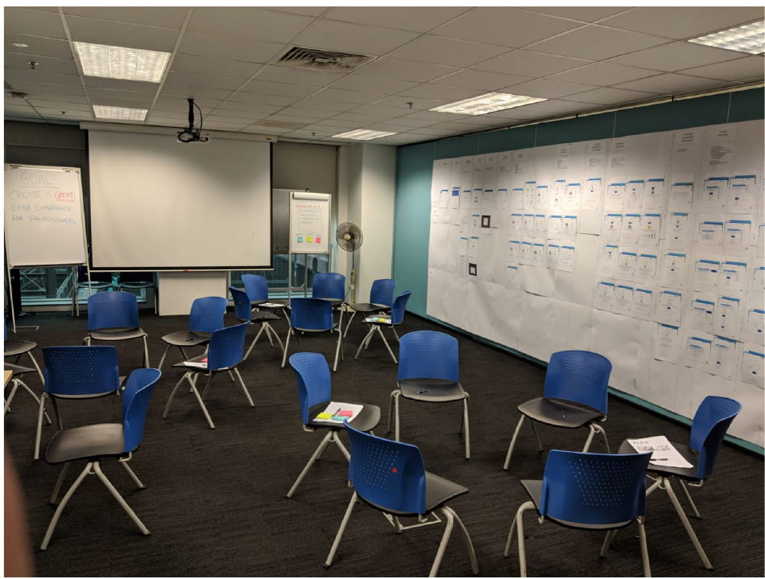
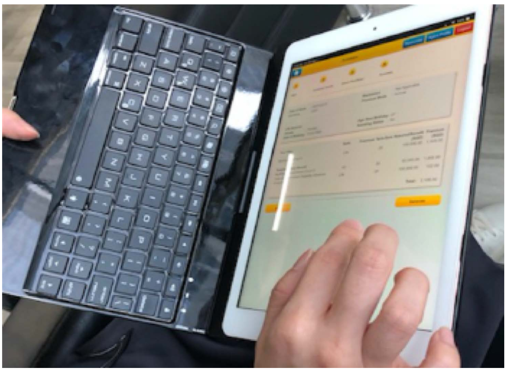
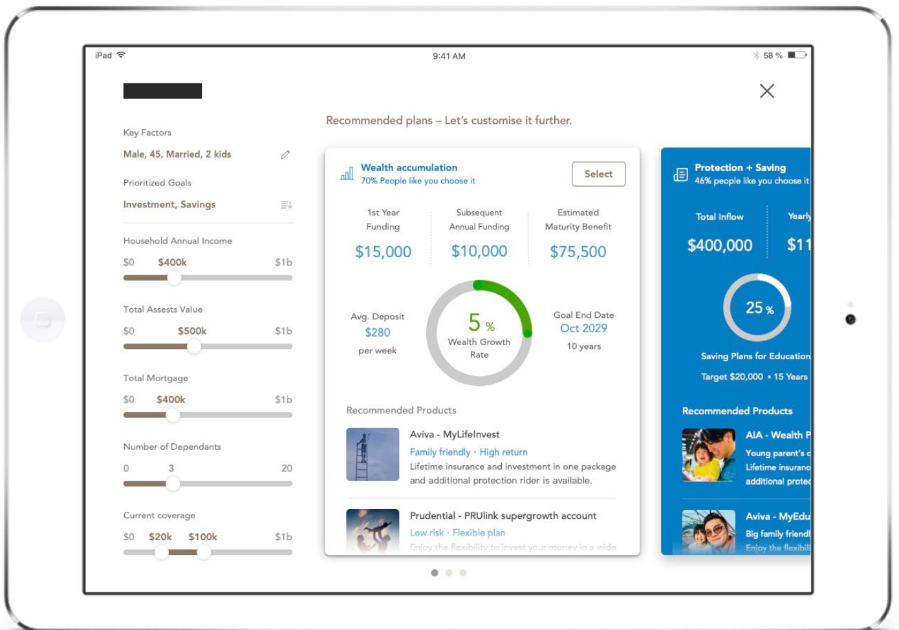

The brief: two users, one screen
A financial advisor’s tablet is unusual among enterprise tools: two people look at it at once. The advisor drives it; the client judges it. If the screen confuses the client, the conversation stalls — and with it, the sale and the trust.
PIAS advisors had inherited screens built by a vendor, and the gaps showed in real meetings. The brief was to rethink the planning experience end to end.
Research: watch the real conversation
Two methods carried the discovery. First, a stakeholder workshop walked through the existing vendor screens together and named every gap and problem in them — turning scattered frustrations into a concrete list. Second, contextual inquiry: I observed financial advisors performing their actual tasks, talking through what they were doing while they did it. Watching a real advisor work reveals what no requirements document contains — where they improvise, what they re-explain to every client, and which numbers clients actually ask about.

The workshop: every screen of the existing vendor design printed on the wall, so stakeholders could walk the whole flow together and name its gaps.

Contextual inquiry: observing a financial advisor performing real tasks and talking through what they were doing while doing it.
The concept: adjust the levers, watch the plan respond
The design put the client’s life at the top — age, family, income, assets, mortgage, dependants, current coverage — as adjustable sliders, so the advisor could tune the profile live during the conversation. Below, recommended plans responded: each card carrying its projections (funding, estimated maturity benefit, growth rate, goal end date) and a piece of social proof — “70% of people like you chose it” — that gave hesitant clients a reference point.
Because PIAS is an independent advisory, the recommendations drew from multiple providers side by side — which made comparability, not persuasion, the design’s job.

The concept on the tablet: the client’s levers on the left, the responding plans with projections and social proof on the right.
Test the concept, not just the screens
Each concept went in front of users to test whether they could understand its structure, affordances, and design elements — before any build. For a tool whose audience includes financially anxious laypeople, comprehension testing is the usability testing.
What I learned
Designing for two users on one screen is its own discipline: the advisor needs speed and control, the client needs legibility and calm, and every element serves both or fails one. And social proof is powerful medicine with a narrow dose — one honest reference point reassures; more than that persuades, and persuasion is exactly what an independent advisor must not appear to do.